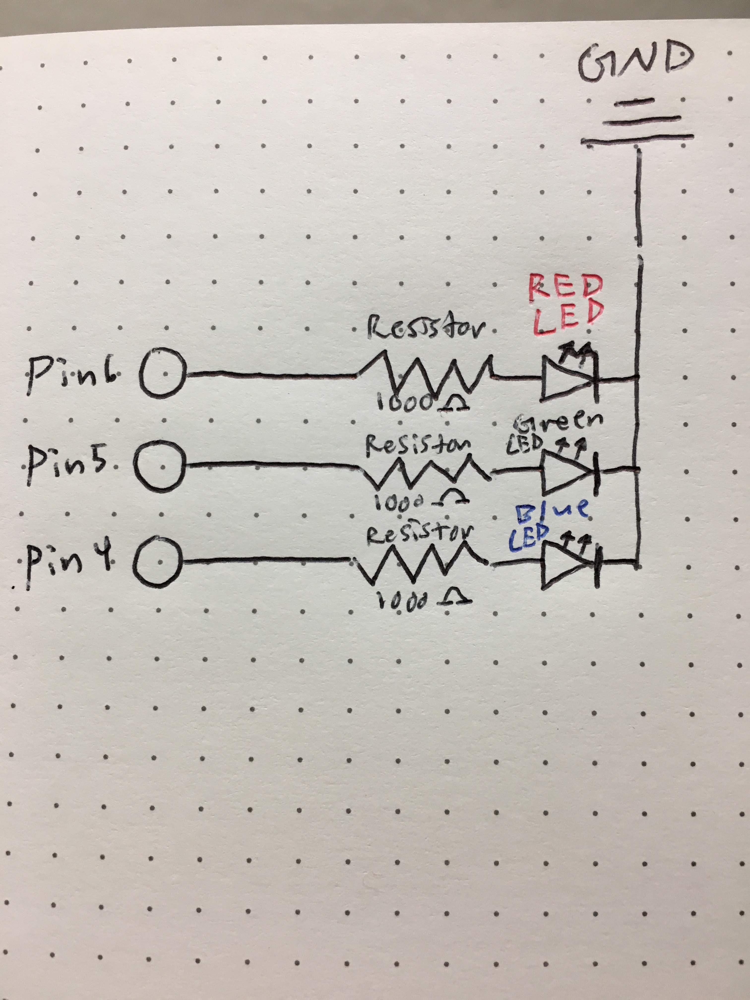

Garrett's Assignment 1 - Blink!
Schematic
The schematic shows the general circuit of pin>resistor>LED>GND. I calculated red and green LED's to need a minimum resistance of 160 ohms, blue LED's needed 85 ohms in order to meet the minimum appropriate resistance needed.
Circuit
My circuit uses a red, green, and blue LED with timers of 200 milliseconds. The circuit outputs power from pins 4-6 and circulates through GND.

Firmware
The general logic of this code initializes a timer to each specific pin and LED to blink on and off.
/*
Garrett Mar
HCDE 439
A1 - Blink
For Loop Iteration
Demonstrates the use of a for() loop.
Lights multiple LEDs in sequence, then in reverse.
The circuit:
- LEDs from pins 2 through 7 to ground
created 2006
by David A. Mellis
modified 30 Aug 2011
by Tom Igoe
This example code is in the public domain.
http://www.arduino.cc/en/Tutorial/ForLoop
*/
// This line initializes a timer for LED's
int timer = 200; // The higher the number, the slower the timing.
// This line is a variable to select each pin for output
void setup() {
// use a for loop to initialize each pin as an output:
for (int thisPin = 2; thisPin < 8; thisPin++) {
pinMode(thisPin, OUTPUT);
}
}
// This line creates a variable for-loop, looping through 2-8 pins
void loop() {
// loop from the lowest pin to the highest:
for (int thisPin = 2; thisPin < 8; thisPin++) {
// turn the pin on:
digitalWrite(thisPin, HIGH);
delay(timer);
// turn the pin off:
digitalWrite(thisPin, LOW);
}
// loop from the highest pin to the lowest:
for (int thisPin = 7; thisPin >= 2; thisPin--) {
// turn the pin on:
digitalWrite(thisPin, HIGH);
delay(timer);
// turn the pin off:
digitalWrite(thisPin, LOW);
}
}
Operating Circuit
Here is an animated GIF of my circuit which showcases everything put together!